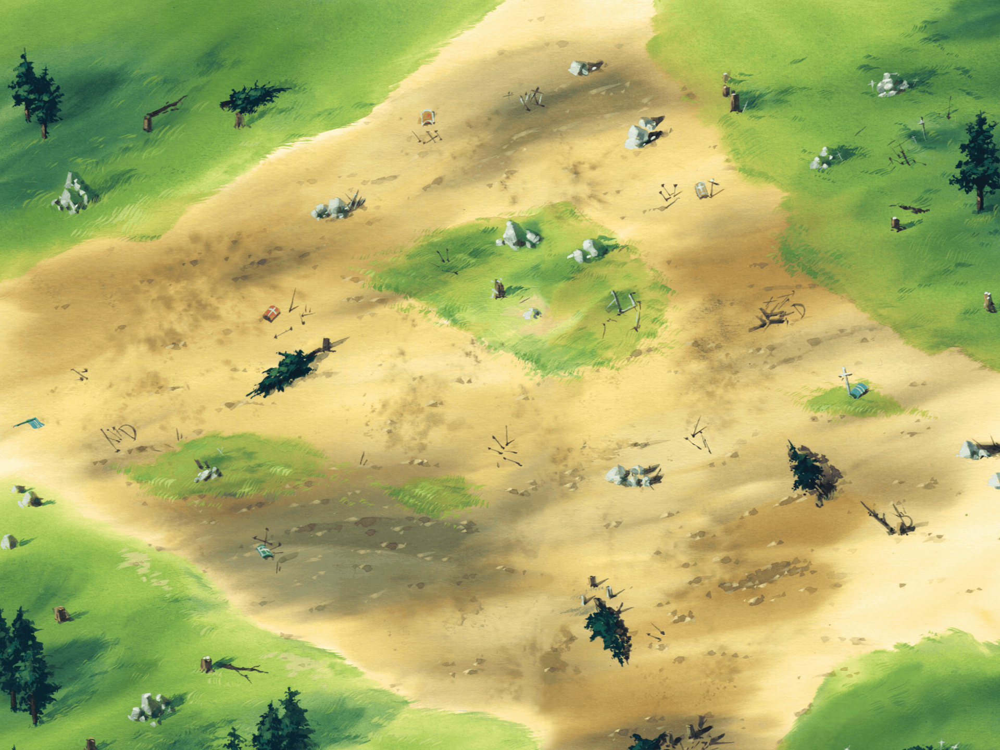

<!DOCTYPE html>
<html lang="en">
<head>
	<meta charset="UTF-8">
	<title>Document</title>
	<style >
		*{
			margin: 0;
			padding: 0;
		}
		html,body{
			width: 100%;
			height: 100%;
			overflow: hidden;
		}
	</style>
</head>
<body>
<!-- 11111 --><!--  -->
	<script type="text/javascript">
		var canvas=document.createElement('canvas');

		var obody=document.body;
		var ctx=canvas.getContext('2d');//创建2d场景画布
		var wW=window.innerWidth;//获取浏览器窗口的宽度
		var wH=window.innerHeight;//获取浏览器窗口的高度
		canvas.width=wW;
		canvas.height=wH;
		var lastTime=0;
		obody.appendChild(canvas);

		
		//创建图片对象

		//地图
		var bgReady=false;
		var bgImage=new Image();//创建场景图片对象
		bgImage.src='images/map/mapOne.png';
		bgImage.onload=function(){
			bgReady=true;
		}
		//初始化幽灵加载状态
		var ghostReady=false;
		var ghostImg=new Image();
		ghostImg.src='images/monster/ghost.png';
		ghostImg.onload=function(){
			ghostReady=true;   //幽灵图片加载完成
		}
		//初始化怪兽加载状态
		var monsterReady=false;
		var monsterImg=new Image();
		monsterImg.src='images/monster/zombieG.png';
		monsterImg.onload=function(){
			monsterReady=true;
		}

		var ghost={
			x:canvas.width/2,    //幽灵的位置x坐标
			y:canvas.height/2,   //幽灵的位置y坐标
			speed:200,          //幽灵的速度
			sX:0,              //幽灵图标x
			sY:0,				//幽灵图标y
		}//创建幽灵对象  里面写属性

		//怪兽
		var monster={
			x:600,
			y:200,
			speed:50,
			direction:'down',
			run:['0','65','130','195'],
			index:0,
			sY:0,
			sX:0
		}
		var keyDown={};//存储用户按下了哪些键
		addEventListener('keydown',function(e){
			keyDown[e.keyCode]=true;
		});
		addEventListener('keyup',function(e){
			delete keyDown[e.keyCode];
		});
		function ghostMove(delta) {
			if (38 in keyDown) {
				ghost.y =ghost.y-ghost.speed*delta;
				ghost.sX=65;
				ghost.sY=0;
			}
			if (40 in keyDown) {
				ghost.y =ghost.y+ghost.speed*delta;
				ghost.sX=0;
				ghost.sY=0;
			}
			if (37 in keyDown) {
				ghost.x =ghost.x-ghost.speed*delta;
				ghost.sX=195;
				ghost.sY=130;
			}
			if (39 in keyDown) {
				ghost.x =ghost.x+ghost.speed*delta;
				ghost.sX=130;
				ghost.sY=130;
			}
			if(Math.abs(ghost.x-monster.x)<=32 && Math.abs(ghost.y-monster.y)<=32){
				kill();
			}
		}
		function kill(){
			monster.x=Math.random()*(canvas.width-64);
			monster.y=Math.random()*(canvas.height-64);
			monster.direction=['up','down','left','right'][Math.floor(Math.random()*4)];
		}

		function monsterMove(sa){
			monster.index++;
			monster.index%=4;
			switch(monster.direction){
				case 'up':
				    monster.y-=monster.speed*0.016;
				    monster.sY=195;
					break;
				case 'down':
					monster.y+=monster.speed*0.016;
					monster.sY=0;
					break;
				case 'left':
					monster.x-=monster.speed*0.016;
					monster.sY=65;
					break;
				case 'right':
					monster.x+=monster.speed*0.016;
					monster.sY=130;
					break;
			}
			monster.sX=monster.run[monster.index];
		}
		function render() {//场景绘制+角色绘制函数
			if(bgReady){
			ctx.drawImage(bgImage,0,0);
			}
			if(ghostReady){
			ctx.drawImage(ghostImg,ghost.sX,ghost.sY,65,65,ghost.x,ghost.y,65,65);
			//绘制幽灵图片   截取起始x标  截取起始y标  x方向截取多少  y方向截取量   绘制起始点x，绘制起始点y
			}
			if(monsterReady){
				ctx.drawImage(monsterImg,monster.sX,monster.sY,65,65,monster.x,monster.y,65,65);
			}
		}
		
		function main(){//用于帧重复绘制场景和角色
			render();   //渲染场景和角色图片
			var delta=Date.now()-lastTime;//刷新频率18ms
			ghostMove(delta/1000);//动画稳定帧
			monsterMove(delta/1000);
			requestAnimationFrame(main);//h5帧动画
			lastTime=Date.now();
		}
		var w = window;
		requestAnimationFrame=w.requestAnimationFrame||w.webRequestAnimationFrame||msRequestAnimation||mozRequestAnimationFrame;   //兼容性
		main();
		render();
	</script>
</body>
</html>
<!-- canvas html5的画布通过canvas对象和api在页面上绘制图形，
图片绘制
window.onliad一个页面只能使用一次
screen.width 屏幕的宽度
screen.height 屏幕的高度

drawImage api
如何统一帧动画刷新频率
	获取当前时间
 -->